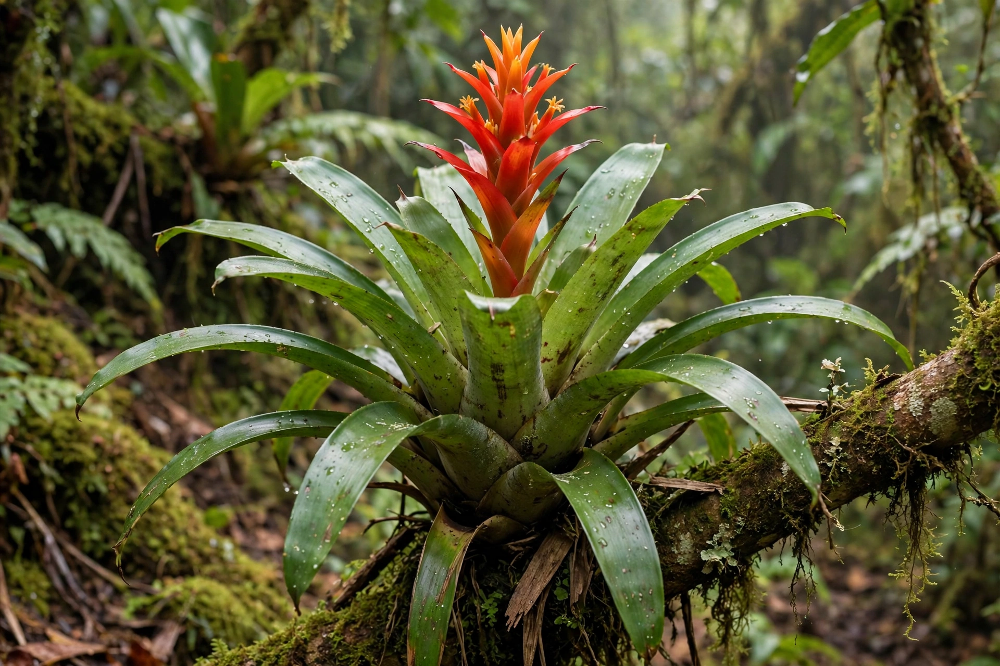

The Bromeliaceae (bromeliads) are a family of monocot flowering plants of about 80 genera and 3,700 species, native mainly to the tropical Americas, with a few in Africa. They include both terrestrial and epiphytic species.

Rosette leaves often forming water-holding tanks, trichome scales for absorbing water, CAM photosynthesis in many. Best known member is pineapple (Ananas comosus); Tillandsia are air plants.
Tank bromeliads shelter frogs and insects. Widely grown as houseplants. See Pineapple, Epiphyte.